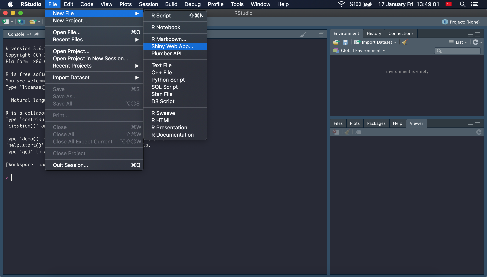

2 Hazırlıklar ve İlk Shiny Uygulaması
Bu bölümde gerekli hazırlıkların tamamlanması ve ilk Shiny uygulamasının nasıl çalıştırılacağı anlatılacaktır.
2.1 Kurulum
2.1.1 R ve RStudio’nun İndirilmesi / RStudio Cloud
Öncelikle ücretsiz bir istatistiksel programlama dili olan R’ın yüklenmesi gerekiyor. R’ı indirmek için https://cran.rstudio.com/ sitesine ilerleyiniz ve işletim sisteminize uygun olan versiyonuna tıklayarak indirmeyi başlatınız.
Daha sonra güçlü bir kullanıcı arayüzü olan RStudio’nun indirilmesi gerekiyor. Onun için de https://rstudio.com/products/rstudio/download/ linkini kullanabilirsiniz. İndirme tamamlandıktan sonra direktifler takip edilerek RStudio kurulumu da tamamlanmış olacaktır.
Eğer bütün bu indirmeleri yapmak istemezseniz ise, yine bir RStudio ürünü olan tamamen ücretsiz ve herhangi bir indirmeye ihtiyaç duymayan çevrimiçi platform RStudio Cloud uygulamasını ziyaret edebilirsiniz. Bu işlemlerin nasıl yapılacağının anlatıldığı RStudio Cloud’da Çalışma bölümüne göz atabilirsiniz.
2.1.2 Kurulumun Test Edilmesi
Kurulumlar tamamlandıktan sonra sisteminizin çalıştığından emin olmak adına RStudio’yu açın ve Konsol veya “Console” yazan yere tıklayarak basit bir kod yazın. Örneğin x = 3 + 4 yazın ve ENTER’a tıklayın. Burada x objesine bir toplama işleminin sonucu atanmış oldu. Bu objenin Environment (Ortam) penceresi altında 7 değeriyle belirdiğine dikkat ediniz.
Herhangi bir hata almadığınızdan emin olduğunuzda bir sonraki bölüme geçebilirsiniz.
2.1.3 İlk R Script Dosyasının Oluşturulması
Yazılan kodları ileride inceleyebilmek, üzerinde değişiklikler yapabilmek için R Script olarak adlandırılan belgeler üzerinde çalışmanız daha mantıklı olacaktır. Dikkat edeceğiniz üzere yukarıda konsola yazdığınız x <- 3 + 4 komutu üzerinde bir değişiklik yapamayacaksınız. Yeni bir R Script belgesi yaratmak için ise RStudio’nun üstünde göreceğiniz panelden “File”, “New File” ve “R Script” sırasıyla seçin. İlk R belgenizin açıldığını göreceksiniz.
R Script’lerde her bir satır kodu ayrı ayrı çalıştırmanız gerekiyor. Bunun için de üzerinde olduğunuz satırı çalıştırmak için Windows kullanıcısı iseniz CTRL+ENTER, MacOS kullanıyorsanız CMD+ENTER kombinasyonlarını kullanmalısınız.
2.1.4 R’da Paketler Hakkında
R paketleri fonksiyonlar, hazır kodlar veya veri setleri içerebilen farklı amaçlar göz önünde bulundurularak oluşturulmuş paketlerdir. R programlama dilini ilk indirdiğinizde birçok paket beraberinde indirilmiş şekildedir ve eğer kullanmak istediğiniz paket bu paketler arasında değilse onu da indirmek ve yüklemek oldukça basittir.
2.1.5 Gerekli Paketlerin İndirilip Yüklenmesi
Bu bölümde kitabın ilerleyen aşamalarında kullanılacak paketlerin indirilmesi ve yüklenmesi tamamlanacaktır.
- Web uygulaması oluşturmak için
shiny, - Daha güzel bir tablo görümüne ulaşmak için
DT, - Veri manipülasyonu için
dplyr, - Veri görselleştirmesi için
ggplot2, - Tarih - zaman verilerinin manipülasyonları için ise
lubridate, - Daha ileri seviye veri manipülasyonları için
tidyr,
paketleri kullanılacaktır. Paketleri indirmek için aşağıdaki kodu ilk R Script belgenizde çalıştırabilirsiniz. (İndirme ile alakalı kodları bir kere çalıştırmanız yetecektir.)
R’da her bir satırı ayrı ayrı çalıştırmanız gerektiğine dikkat ediniz. (Üzerinde olduğunuz satırı çalıştırmak için Windows kullanıcısı iseniz CTRL+ENTER, MacOS kullanıyorsanız CMD+ENTER kombinasyonlarını kullanmalısınız.) İndirmeler internet bağlantınızın durumuna göre 1-5 dakika arası sürebilir.
install.packages("shiny")
install.packages("DT")
install.packages("dplyr")
install.packages("ggplot2")
install.packages("lubridate")
install.packages("tidyr")İndirilen paketlerin yüklenmesi için ise kullanılması gereken kod aşağıda bulunabilir. (Bu kodları ise programı her açtığınızda tekrar uygulamanız gerekmektedir.)
Yüklemeler de tamamlandığında ilk Shiny uygulamanızı nasıl oluşturabileceğinizi anlatan kısma geçmeye hazırsınız.
2.2 İlk Shiny Uygulaması
2.2.1 Çevrimiçi Çalıştırma
Bu kitapta kullanılacak olan bütün örnek uygulamalar açık bir Github hesabında paylaşılacak ve her bir örneğin ardından o uygulamaya kendi bilgisayarlarınızdan göz atabilmek için gereken tek satırlık R kodu da altında paylaşılacaktır.
Örneğin birazdan oluşturacağımız ilk Shiny uygulamasına göz atmak için aşağıdaki kodu çalıştırabilirsiniz.
Burada kullanılan runGithub() fonksiyonu shiny paketinin içinde gelen bir fonksiyondur. O nedenle çalışmaya başlamadan önce library(shiny) komutunu çalıştırdığınızdan emin olunuz.
Bu aşamaya kadar her şeyi doğru yaptıysanız karşınıza şu şekilde bir uygulama çıkacaktır.
Şimdi ise bu uygulamayı sizin nasıl yaratabileceğinizi anlatalım.
2.2.2 İlk Shiny Uygulamasının Oluşturulması
Yukarıda çalıştırdığınız uygulama, ilk R Shiny belgenizi oluşturduğunuzda karşınıza çıkan örnek bir şablon ve bu kısımda bu şablonu nasıl yaratabileceğinizi adım adım anlatacağız. Sonraki bölümlerde ise sıfırdan bir Shiny uygulamasını nasıl oluşturabileceğinizi ve uygulamanın genel hatlarını örnekler üzerinden göstereceğiz.
- Bilgisayarınızda RStudio’yu açın.
- “File” -> “New File” -> “Shiny Web App” adımlarını uygulayın.

- Karşınıza çıkan ekranda oluşturmak istediğiniz belgenin ismini ve çalışma dizinini belirleyin. (Burada belge seçeneklerinden “Single File (app.r)” seçeneğini seçmelisiniz.)
- Oluşturulan belgenin sağ üst kısmında yeşil renkli okla belirtilen “Run App” butonuna tıklayın. İlk uygulamanızı çalıştırmış oldunuz :)
Bir sonraki bölümde bir Shiny uygulamasının genel hatları ve kullanışlı fonksiyonları adım adım örneklerle anlatılacaktır.